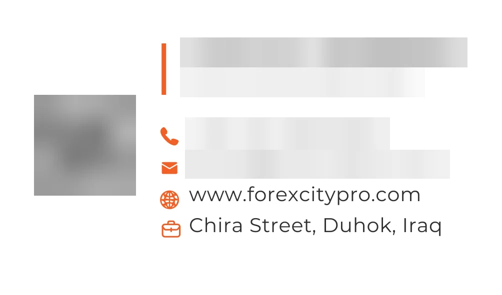

Identity / business card, bag & stationery
Forex City: one identity,
from card to bag.
- Client
- Forex City — E-Trading Limited, Duhok
- Pieces
- Business card, paper bag, notebooks, pens
- Language
- English
- My role
- Design

01
Project Overview
Forex City is an e-trading company in Duhok — «E-Trading / Limited» on its card. I designed its business card and a set of branded items: a paper bag, two notebooks and pens.
02
Design Challenge
The same identity has to hold together on very different objects — a small printed card, a carry bag, notebook covers and a pen — using only the logo, two colours and a few lines of text.
03
Design Approach
- Triangles taken from the logo: the logo opens with a slanted triangle before the F. The front of the card turns it into a pattern of triangles, graded from yellow to deep orange-red.
- A mark for small spaces: the triangle and the F become a stand-alone mark on the sides of the bag, embossed on the notebook covers and printed on the pens.
- Two colours that swap places: navy and orange — a navy bag with orange sides and handles, an orange notebook with a navy band, and a navy notebook with an orange band.
- One short orange line: under the tagline on the bag and under the logo on the cards, and as a vertical bar beside the name on the back of the business card.
- Contact details in one column: orange icons beside each line on the back of the card, and the same icons with a QR code on the back of the bag.
- A tagline in spaced capitals: «Built on trust. Driven by excellence.» on the front of the bag.
04
Final Deliverables
- Business cardTwo sides — pattern front, contact back
- Paper bagFront and back
- NotebooksOrange and navy versions
- PensNavy, with the mark and website
05
Project Gallery



Need an identity that works on every item?
Send your logo and the items you need: cards, bags, notebooks or other printed pieces.